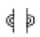
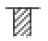
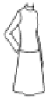
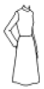
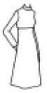
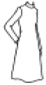

양장기능사 (2005-04-03 기출문제)
1과목: 임의 구분
1. 다트 머니풀레이션의 응용이 아닌 것은?
- 스모킹
- 프린세스 라인
- 다트 풀니스
- 요크
(정답률: 53%)

2. 다음 중 블라우스 단추의 위치로 바른 것은?
- 안단선
- 길 중심선
- 여밈분과 길 중심선의 중간
- 여밈분 끝선
(정답률: 53%)
3. 다음 부호 중 맞춤 표시에 해당되는 것은?


(정답률: 89%)
4. 여름용 홑겹 슈트의 솔기 처리법으로 적합한 것은?
- 핑킹가위 자르기
- 지그재그 박기
- 끝접어 박기
- 바이어스 바인딩
(정답률: 56%)
5. 가죽이나 청지에 주로 사용하는 재봉틀 바늘은?
- 9호
- 11호
- 14호
- 16호
(정답률: 83%)
6. 스커트 원형을 제도할 때 필요 치수 항목으로 가장 옳은 것은?
- 스커트 길이, 허리 둘레, 엉덩이 길이, 엉덩이 둘레
- 스커트 길이, 밑위 길이, 엉덩이 둘레, 배 둘레
- 스커트 길이, 허리 둘레, 엉덩이 둘레, 무릎 길이
- 스커트 길이, 허리 둘레, 배 둘레, 스커트 폭
(정답률: 78%)
7. 실표뜨기할 때 주의사항으로 틀린 내용은?
- 직선일 때는 간격을 성글게, 곡선일 때는 간격을 촘촘하게 시침한다.
- 면사 2올로 겉에서는 실 땀이 길고 뒤에서는 짧게 되도록 시침한다.
- 완성후 실을 뽑기 쉽게 완성선에서 0.5㎝떨어져서 한다.
- 옷감 한 겹을 제치고 사이의 실을 자른다.
(정답률: 67%)
8. 다음 소매산중에서 가장 편한 형태는?
- A·H /3
- A·H /4
- A·H +/3- 4
- A·H/ 6
(정답률: 96%)
9. 다음중에서 키가 크고 목이 짧은 체형이 피해야 할 네크라인(neck line)이나 칼라의 형태는?
- V 네크라인
- 로 라운드(Low round) 칼라
- 퓨리탄(Puritan) 칼라
- 테일러드 칼라
(정답률: 35%)
10. 길원형의 제도에서 앞길의 기초선을 그릴 때 가로선의 계산에서 B/4 + 4cm를 한다. 이 때 4cm가 뜻하는 것은?
- 앞뒤의 차
- 앞 처짐분
- 다트 폭
- 여유분
(정답률: 71%)
11. 직선봉이 두 개 이상 병열되어 있는 박음 방식은?
- 공업용 재봉기의 소분류: 장방형
- 공업용 재봉기의 대분류: 복합봉
- 공업용 재봉기의 중분류: 복렬봉
- 공업용 재봉기의 소분류: 원통형
(정답률: 53%)
12. 다음 중 키가 제일 커 보이는 디자인은?




(정답률: 40%)
13. 단백질 섬유는 방축가공이 되어 있는 경우가 많으므로 물을 가볍게 뿌려 헝겊을 덮고 다려야 하는 직물은?
- 면직물
- 마직물
- 모직물
- 합성직물
(정답률: 65%)
14. 세탁을 자주해야 하는 운동복, 아동복, 와이셔츠 등에 많이 이용되며 겉으로 바늘땀이 두 줄이 나오기 때문에 스포티한 느낌을 주는 바느질법은?
- 평솔(plain seam)
- 통솔(french seam)
- 뉜솔(welt seam)
- 쌈솔(flat felled seam)
(정답률: 90%)
15. 시접분량이 가장 적은 것은?
- 목둘레
- 옆선
- 어깨
- 스커트 단
(정답률: 91%)
16. 다음 제도 기호가 바르게 연결된 것은?
- 직각

- 늘린다

- 주름

- 바이어스

(정답률: 89%)
17. 뒷길 원형의 기본 다트 명칭은?
- 숄더 다트
- 암홀 다트
- 언더암 다트
- 센터프론터 다트
(정답률: 48%)
18. 스커트의 명칭 중 실루엣에 따른 명칭과 형태에 따른 명칭이 동일하지 않은 것은?
- 서큘러 스커트
- 타이트 스커트
- 큐롯 스커트
- 트럼펫 스커트
(정답률: 69%)
19. 골무는 일반적으로 오른손을 기준으로 할 때 어느 손가락에 끼워야 하는가?
- 엄지 손가락
- 집게 손가락
- 가운데 손가락
- 새끼 손가락
(정답률: 53%)
20. 원단 150cm 폭으로 웨이스트 66cm, 스커트 길이 80cm 인180˚플레어스커트 재단 때 올바른 옷감량 계산법은?
- (스커트 길이×1.5)＋시접
- (스커트 길이×2)＋시접
- (스커트 길이×2.5)＋시접
- 스커트 길이＋시접
(정답률: 48%)
2과목: 임의 구분
21. 레이스나 얇은 옷감으로 러플을 만들어 블라우스나 아동복등의 커프스나 치마단 장식에 이용되는 것으로 러플보다 폭이 좁은 것은?
- 프릴
- 레이스
- 플라운스
- 게이징
(정답률: 83%)
22. 가봉시의 일반적인 유의사항이 아닌 것은?
- 칼라, 커프스, 포켓은 가 재단 한 후 치수, 크기, 모양등을 확인 후 옷감을 재단한다.
- 바늘을 옷감에 어슷내려 꽂아 시침한다.
- 단추는 같은 크기로 종이나 천을 잘라서 일정한 위치에 붙여본다.
- 시착한 다음 전체적인 실루엣을 먼저 관찰하고, 부분적인 곳을 관찰한다.
(정답률: 58%)
23. 심 퍼커링(Seam Puckering)에 대한 설명으로 틀린 것은?
- 땀수를 증가시키면 퍼커링 발생을 방지시킬 수 있으므로 가능한 범위내에서 땀수를 크게 하는 것이 좋다.
- 실의 장력이 너무 약하면 스티치가 엉성하여 솔기의 강도가 약해지고 반대로 장력이 너무 강하면 퍼커링이 생긴다.
- 소재의 방향에 따라서 경사방향은 퍼커링이 가장 심하게 나타나고 그 다음 위사방향이고 바이어스 방향은 일어나지 않는다.
- 천을 구성하는 섬유와 같은 종류의 봉사를 사용하는 것이 좋다.
(정답률: 71%)
24. 하반신이 뒤로 제쳐져 하복부가 나온 체형으로 엉덩이 뒤에 주름이 생기고 앞 스커트 단이 올라가고 뒤 스커트 단이 처지는 체형의 보정법이 아닌 것은?
- 뒤 중심을 파준다.
- 뒤 스커트 허리선을 오그려 준다.
- 뒤 스커트의 다트 분량을 줄인다.
- 앞 중심을 올려 준다.
(정답률: 15%)
25. 가봉 및 보정에 대한 일반적인 주의사항으로 부적당한 것은?
- 실은 주로 합성사보다는 면사를 사용한다.
- 작은 조각 이외에는 반드시 재봉대 위에 펴놓고 오른손으로 누르면서 오른쪽에서 왼쪽으로 시침한다.
- 바이어스 감과 직선으로 재단된 옷감을 붙일 때는 바이어스 감을 위로 겹쳐 놓고 바느질한다.
- 바느질 방법은 손바느질의 상침 시침으로 한다.
(정답률: 71%)
26. 소매길이를 재는데 기준점이 되지 않는 것은?
- 어깨끝점
- 목뒤점
- 팔꿈치점
- 손목점
(정답률: 89%)
27. 부직포 심지에 대한 옳은 설명은?
- 접착제를 사용하여 섬유와 섬유를 얽히게 해 고정시킨 소재이다.
- 절단부위가 약해서 올이 잘 풀린다.
- 올의 결은 방향성을 가지고 있다.
- 세탁에 수축하거나 늘어나기 쉽다.
(정답률: 93%)
28. 루퍼는 한쪽으로부터 밑실이 들어가 선단에서 자유롭게 나오도록 되어 있고, 바늘의 실은 루퍼가 걸고 다음에 바늘실이 루퍼에서 벗어지기 전에 루퍼 실을 바늘이 다시 거는 조작을 번갈아 되풀이해서 환봉을 구성하는 재봉기는?
- 단환봉 재봉기
- 이중환봉 재봉기
- 본봉 재봉기
- 주변 감침봉 재봉기
(정답률: 53%)
29. 다음중에서 봉제할 때 영향을 가장 많이 끼치는 것들은?
- 옷감·가위·쵸크
- 옷감·실·바늘
- 옷감·실·치수
- 옷감·바늘·가위
(정답률: 83%)
30. 굴신체의 설명 중 틀린 것은?
- 앞이 남고 뒤가 부족하기 쉬운 경우이다.
- 옷을 입으면 앞이 뜨고 주름이 생긴다.
- 표준보다 몸이 뒤로 기울어진다.
- 뒤의 길이를 늘이든지 앞의 길이를 줄이면 된다.
(정답률: 84%)
31. 건식세탁의 장점이 아닌 것은?
- 건조가 빠르고 손질이 간편하다.
- 세탁물의 지질이 손상되지 않는다.
- 유용성오점을 제거하기가 용이하다.
- 습식세탁보다 세척율이 좋다.
(정답률: 75%)
32. 폴리에스테르 섬유가 다른 합성섬유에 비하여 가장 좋은 특성을 가지는 것은 다음 중 어느 것인가?
- 흡습성이 크다.
- 정전기가 많이 발생한다.
- 내열성이 우수하다.
- 내후성이 우수하다.
(정답률: 62%)
33. 날실과 씨실에 방모사를 사용하고 제직 후 축융, 털세우기하여 셔어츠, 의복지로 사용하는 직물은?
- 알파카(alpaca)
- 융(flannel)
- 머슬린(muslin)
- 포럴(poral)
(정답률: 60%)
34. 양털과 비교한 캐시미어 털의 성질 중 틀린 것은?
- 강도가 강하고 방적성이 좋다.
- 부드럽고 가벼우며 고상한 광택이 있다.
- 굵은 권축을 가지고 있다.
- 독특한 스케일이 있다.
(정답률: 47%)
35. 다음 중 폴리우레탄계 섬유는 어느 것인가?
- 비닐론
- 나일론
- 스판덱스
- 하이젝스
(정답률: 72%)
36. 다음 중 합성섬유에 속하는 것은?
- 알긴산 섬유
- 나일론 6
- 셀룰로스레이온
- 카제인 섬유
(정답률: 80%)
37. 섬유가 물에 젖어도 약해지지 않고 건조시와 거의 비슷한 강도를 가지는 것은?
- 면이나 마 직물
- 아세테이트 직물
- 모 직물
- 나일론 직물
(정답률: 34%)
38. 다음 직물 중 세탁 후 가장 빨리 건조되는 것은?
- 나일론 직물
- 비스코오스 레이온 직물
- 견 직물
- 폴리에스테르 직물
(정답률: 48%)
39. 연소 후 부풀은 부드러운 검은 재가 남는 섬유는?
- 아마
- 양모
- 레이온
- 면
(정답률: 49%)
40. 다음 중 동물성 섬유로서 크림프와 스케일이 잘 발달된 섬유는?
- 양모
- 면
- 마
- 나일론
(정답률: 93%)
3과목: 임의 구분
41. 색의 동화 현상에 관한 설명으로 틀린 것은?
- 같은 회색 줄무늬라도 청색 줄무늬에 섞인 것은 청색을 띠어 보이고, 황색 줄무늬에 섞인 것은 황색을 띠어 보인다.
- 시야 속의 대상을 파악하는 마음가짐에 따라서 달라지기도 한다.
- 동화를 일으키기 위해서는 색의 영역이 하나로 종합될 필요가 있다.
- 동화를 일으키기 위해서는 색의 영역이 뚜렷이 분리됨이 필요하다.
(정답률: 48%)
42. 의복에서 내부의 구성선이나 장식적인 요소들을 무시하는 외형을 무엇이라 하는가?
- 다트선
- 힙라인선
- 실루엣선
- 허리선
(정답률: 85%)
43. 색채 계획의 설명이 잘못된 것은?
- 계획의 목적과 대상을 조사하고 아이디어에서 제품까지 디자이너가 의도하는 색을 정확히 분석한다.
- 목적에 맞는 정확한 기술과 방법을 검토하고, 인쇄, 염색, 시공, 제조, 판매 등을 구체화시켜 전달한다.
- 계획의 지시, 제시 등 최종 효과에 대한 관리방법까지 하나의 통합적인 계획이 있어야 한다.
- 색채에 대한 관념을 기능적인 것에서 감각적으로 방향을 바꾸며, 주관적이고 과학적인 연구 자세를 가지도록 해야 한다.
(정답률: 62%)
44. 다음 중 반사율이 가장 높은 것은?
- 저명도
- 중명도
- 채도
- 고명도
(정답률: 65%)
45. 다음 중 가장 정열적인 배색은?
- 보라 바탕에 흰색
- 노랑 바탕에 빨강
- 노랑 바탕에 연두
- 녹색 바탕에 파랑
(정답률: 96%)
46. 다음 색 중 가장 부드러운 느낌의 색은?
- 자주
- 분홍
- 주황
- 빨강
(정답률: 89%)
47. 색상환(hue circle)을 가장 옳게 설명한 것은?
- 스펙트럼의 색상에 자주나 연지를 더하여 시계방향으로 둥글게 배열한 것이다.
- 색의 밝고 어두운 정도를 말한다.
- 색의 맑기를 말한다.
- 색채의 구별을 위한 색채의 명칭을 말한다.
(정답률: 55%)
48. 다음 중 녹색 잔디 위에서 가장 눈에 잘 뜨이는 색은?
- 노랑
- 파랑
- 귤색
- 자주
(정답률: 63%)
49. 허리를 강조하여 가장 여성미를 드러내는 실루엣은?
- 아워글래스 실루엣
- H라인 실루엣
- 타원형 실루엣
- 시스 실루엣
(정답률: 64%)
50. 봄 시즌에 밝고 생동감있는 디자인을 할 때에 의복의 색상에 적당한 것은?
- 노랑, 연두
- 진녹색, 검정
- 검정, 갈색
- 남색, 갈색
(정답률: 89%)
51. 면, 마, 레이온 등의 셀룰로스 직물을 미리 강제 수축시켜 수축을 방지하는 방축가공은?
- 런던슈렁크(london shrunk)
- 염소화법(chlorination)
- 헤르코세트(hercosett)법
- 샌포라이즈(sanforized)
(정답률: 60%)
52. 직물의 변에 대한 설명 중 맞지 않는 것은?
- 직물의 제직·가공·정리시 이 부분이 큰 힘을 받는다.
- 다른 부분보다 얇게 제직되어 있다.
- 대부분의 상호가 여기에 표시되기도 한다.
- 직물의 양쪽 끝에 있는 쫀쫀한 부분이다.
(정답률: 77%)
53. 방한복의 선택 조건으로 적합한 것은?
- 흡습성이 높은 것
- 열전도율이 낮은 것
- 통기성이 높은 것
- 투습성이 좋은 것
(정답률: 75%)
54. 합성세제에 소량의 비누를 배합하여 거품생성을 억제한 세제는?
- 중질세제
- 액체세제
- 저포성세제
- 제포성세제
(정답률: 60%)
55. 주자 조직의 특징을 설명한 것은?
- 날실과 씨실의 굴곡이 가장 많으며 직축률이 가장 크다.
- 구김이 잘 생기고 광택은 비교적 불량한 편이다.
- 직물의 밀도를 크게 증가시켜 제직할 수 없다.
- 날실과 씨실이 각각 5올 이상으로 구성되어 있고 광택이 우수하다.
(정답률: 83%)
56. 다음은 피복의 성능을 관계되는 것끼리 짝을 맞춰 놓은 것이다. 거리가 먼 것은?
- 감각적 성능 - 촉감
- 위생적 성능 - 형태안정성
- 실용성 성능 - 강도와 신도
- 관리적 성능 - 충해
(정답률: 75%)
57. 직물의 기본이 되는 삼원조직이란?
- 능직, 사직, 수자직
- 평직, 능직, 파일직
- 평직, 사직, 중합직
- 평직, 능직, 수자직
(정답률: 92%)
58. 다음 중 실로 피복을 만드는 방법이 아닌 것은?
- 브레이드
- 편성물
- 펠트
- 레이스
(정답률: 57%)
59. 곰팡이가 발생할 수 있어 깨끗하고 건조하게 보관 해야하는 섬유끼리 짝지어진 것은?
- 면-레이온
- 아마-나일론
- 견-폴리에스테르
- 모-아세테이트
(정답률: 63%)
60. 의류 착용시에 마찰이나 일광에 의한 변·퇴색이 가장 적게 나타나는 부분은?
- 무릅 부분
- 소매 가장자리 부분
- 어깨 부분
- 가슴 부분
(정답률: 67%)